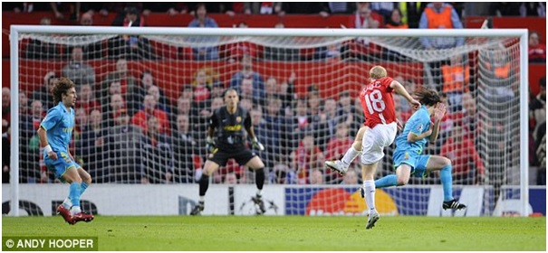
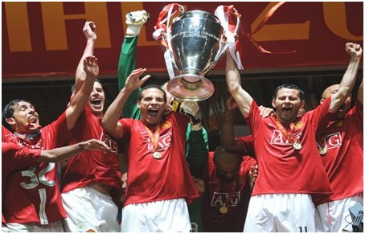

Chương 38

hung kết Cúp FA gặp Chelsea vào tháng 5, 2007 là lần cuối cùng Ole Gunnar Solskjaer khoác áo Manchester United. Sau trận đấu, anh một lần nữa lên bàn mổ, nhưng không thể nào chữa lành chấn thương đầu gối. Tháng 8,Solskjaer tuyên bố giải nghệ ở tuổi 34, trong sự nuối tiếc của người hâm mộ. Cùng rời Old Trafford với cầu thủ dự bị được yêu thích nhất trong lịch sử United có Gabriel Heinze (đến Real Madrid) và Alan Smith (sang Newcastle). Để bổ sung lực lượng, Ferguson mạnh tay bỏ ra gần 50 triệu bảng, mua về tuyển thủ quốc gia Anh Owen Hargreaves và cặp đôi cầu thủ trẻ Nani (BĐN)-Anderson (Brazil). Ngoài ra, còn có tiền đạo người Argentina Carlos Tevez đến từ West Ham theo hợp đồng cho mượn, và hậu vệ Jonny Evans được đôn lên từ đội trẻ.
So với lứa 98-99,thế hệ mới do Ferguson gầy dựng có phần trội hơn một chút về sức mạnh hàng thủ. Trong khung gỗ, Edwin Van der Sar tạo sự tin tưởng tuyệt đối bằng sải tay dài và phản xạ phi thường. Phía trên anh, cặp trung vệ Ferdinand – Vidic mỗi người mỗi vẻ, người âm nhu, người dương cương,bổ sung hoàn hảo cho nhau. Ferdinand là hậu vệ với lối chơi nghệ sỹ, tinh tế, mềm mại, giỏi việc bọc lót;trông như nhàn nhã, lười biếng, mà hiệu quả vô cùng. Không chỉ phòng ngự, anh còn phát động tấn công rất tốt. Vidic thì mạnh mẽ, quyết liệt, chuyên về không chiến, thường hay dâng cao, ghi bàn trong những pha phạt góc. Xét đến hai cánh, cánh trái có Patrice Evra nhanh nhẹn, thể lực sung mãn, lên xuống như con thoi. Bên cánh phải, thủ quân Gary Neville sức đã yếu, hay chấn thương, nên ít khi ra sân, nhưng John O’Shea hay Wes Brown đều có thể đá tròn vai.
Tuy vậy, xét từ giữa sân trở lên, thế hệ mới nói chung không bằng đàn anh. Hàng tiền đạo mùa 2007-2008 khá mỏng, với mỗi ba tiền đạo thực thụ là Rooney, Tevez, và Saha. Rooney và Tevez đá chính thường xuyên, có lối chơi tương tự như nhau: Cùng bao sân, không chỉ chuyên ghi bàn mà còn giỏi kiến tạo, thu hồi bóng, tích cực tham gia phòng ngự từ xa. Thế nhưng, giữa hai người không có mối quan hệ “thần giao cách cảm” như kiểuCole và Yorke. Hàng tiền vệ thì phải thừa nhận là kém hẳn thế hệ 98-99. Mặc dù Scholes và Giggs còn đó, họ tuổi đã cao, phong độ không còn như xưa; Owen Hargreaves xuất sắc song quá hay chấn thương; Darren Fletcher và Park Ji Sung đá cần cù, chịu khó, có điều chưa được “nhiệt” như Roy Keane, so về độ quái lại càng kém; Michael Carrick thì phập phà phập phù; còn Anderson và Nani chỉ ở dạng triển vọng.
Nhưng còn một người nữa, ta vẫn chưa nhắc đến. Vâng, chính đó là người tạo nên sự khác biệt: Cristiano Ronaldo. Nửa tiền vệ, nửa tiền đạo, Ronaldo như linh hồn của United, tựa đôi cánh giúp Quỷ Đỏ bay cao. Anh là “cặp mắt rồng” của thế hệ 07-08, cũng như Cantona của thế hệ 93-94. Thiếu đi cặp mắt, rồng chỉ là “long tại điền”, không thể nào thăng hoa thành “long tại thiên”. Ferguson đánh giá Ronaldo là người tài năng nhất trong tất cả các cầu thủ ông từng huấn luyện. Lời khen ấy không hề quá đáng.
Ngày 12 tháng 8, 2007, United bước vào chiến dịch bảo vệ danh hiệu VĐQG. Bước đầu: không mấy khả quan, hòa 0-0 trên sân nhà trước Reading, Rooney chấn thương. Bước hai: cũng chưa thấy sáng, tiếp tục hòa 1-1 trước Portsmouth, Ronaldo nhận thẻ đỏ. Bước ba: United thiếu cả Rooney lẫn Ronaldo bị Manchester City đánh bại 1-0, rớt xuống thứ 16 trên bảng xếp hạng.
Bên phía Chelsea, tình hình cũng chẳng khá khẩm gì. Sau chuỗi trận toàn thua và hòa, Abramovich quyết định chấm dứt hợp đồng với "người đặc biệt" Jose Mourinho. Thế mới biết đồng tiền nào cũng có hai mặt; được tỷ phú chống lưng quả tha hồ mua sắm tiêu xài, nhưng chỉ cần vài trận không đạt yêu cầu liền đi đời nhà ma! "Thật thất vọng khi từ nay tôi và cậu ta không còn dịp đọ tài", Sir Alex tiếc nuối, "Jose như mang đến một luồng gió mới, tươi trẻ, thanh tân; những thành công của cậu ta là không thể phủ nhận."
Trong trận đầu tiên dưới quyền tân HLVAvram Grant, Chelsea xếp giáp quy hàng trước United: thua 0-2, với hai bàn của Tevez và Saha. Thừa thắng xông lên, Quỷ Đỏ lấy lại phong độ vốn có. Cuối tháng chín, Ronaldo lần đầu lập công, giúp đội vượt qua Birmingham. Từ thời điểm ấy, anh không thểngừng ghi bàn. Trung bình cứ mỗi trận, Ronaldo làm một hay hai bàn, thỉnh thoảng hứng lên còn lập luôn hattrick.Từ lúc Ronaldo "thông nòng", đội anh thẳng tiến một đường. Hết thủ môn này đến thủ môn khác, hết đội này đến đội khác, bị bộ ba Ronaldo-Rooney-Tevez tra tấn. Newcastle là tội nghiệp nhất: Lượt đi thua 0-6, lượt về thua 1-5; Aston Villa cũng thê thảm: Lần lượt "ôm đầu máu" với các tỷ số 1-4 và 0-4. United đạt đến đỉnh cao phong độ vào tháng 3, 2008, khi đá năm trận thắng cả năm, ghi 13 bàn, không để lọt dù chỉ một trái.
Trên đấu trường châu Âu, phong độ Ronaldo không kém rực rỡ. Anh ghi năm bàn trong vòng đấu bảng; góp phần lớn đưa United giành ngôi đầu. Quỷ Đỏ sau đó tiếp tục vượt qua Lyon và AS Roma, lần lượt với các tổng tỷ số 2-1 và 3-0, nhờ các bàn thắng của Ronaldo, Rooney và Tevez. Cùng Liverpool và Chelsea, United là một trong ba CLB Anh vào bán kết. Đội còn lại, cũng là đối thủ của họ, không ai khác ngoài kẻ địch nhiều duyên nợ Barcelona.
Barca giờ đã khác xưa, không còn là "đội bóng một người", phụ thuộc vào Rivaldo như năm 1999, mà sở hữu cả một "Dream Team", không hề thua sút đội hình trong mơ của Johan Cruyff trước đây. CLB xứ Catalonia chơi bóng với phong cách diễm ảo, đầy nghệ thuật, liên tục trình diễn những đường chuyền ban ngắn, phối hợp nhỏ, đập nhả, đan xen. Xavi, Iniesta, Deco, và trên tất cả, cậu bé thiên tài người Argentina Lionel Messi, đều là những nghệ sỹ sân cỏ.
Biết rằng đôi công cùng Barca đồng nghĩa với tự sát, Ferguson đưa ra sơ đồ chú trọng phòng ngự, sử dụng đến hai tiền vệ chuyên đánh chặn là Carrick và Scholes. Trận đầu tiên tại Camp Nou, mặc cho Barcelona chiếm giữ thế trận, United phong tỏa thành công các mũi nhọn của đối phương, bảo vệ được tỷ số 0-0. Thậm chí, nếu Ronaldo không sút hỏng phạt đền, đội đã thắng ngay trên đất khách. Xuất sắc nhất trong trận này là Rooney. Anh chơi như người không phổi, chạy khắp sân, thoắt lên thoắt xuống, có lúc lùi hẳn đá như hậu vệ, càn lướt dữ dội, không cho đối phương một khoảng trống nào.
Lượt về ở Old Trafford, Rooney chấn thương vắng mặt, Tevez thay vai hoàn hảo. Thế trận vẫn không đổi: United phòng thủ chặt chẽ, Barcelona tấn công vô vọng. Khác biệt duy nhất đến từ bàn thắng của Paul Scholes: Một cú sút xa căng như kẻ chỉ, đưa bóng bay vào góc chết khung thành. Thời sung sức, mỗi năm Scholes có đến năm sáu bàn như thế, song ở tuổi 34 xế chiều, cú sút ấy là một sự xuất thần.
Hai trận gặp Barca là thí dụ tiêu biểu cho thấy sự khác biệt trong lối chơi giữa thế hệ 07-08 và 98-99. Lứa trước đá tốc độ nhanh, tấn công dồn dập, cuồn cuộn; lứa sau thận trọng, chủ trương chậm mà chắc. Đó đều do tính toán của Ferguson. Trên thế giới có hai loại HLV: Loại thứ nhất chỉ có một bài, đi đến đâu cũng dùng bài ấy, như Marcelo Bielsa, huấn luyện đội nào cũng xua quân cắm đầu hùng hổ xông lên; loại thứ hai biết cách thích nghi, tùy cơ ứng biến, như Sir Alex. Lứa 98-99 tấn công vũ bão là do có những nhân sự thích hợp, đàn em 07-08 nếu muốn đá như thế phải cần thêm ít nhất một...Ronaldo, chứ không thể yêu cầu Fletcher hay Carrick chơi như "hành vân lưu thủy".Sir tuy già đi mà không cố chấp: Mỗi thời mỗi khác, cần có sự thay đổi, miễn sao vẫn đem về danh hiệu.

Paul Scholes sút xa tuyệt đẹp, ghi bàn duy nhất vào lưới Barcelona (Ảnh: Dailymail.co.uk)
Sau chiến thắng trước Barca, United bước vào đoạn cuối cuộc đua Ngoại Hạng. Ban đầu, cuộc đua gồm ba ngựa: Arsenal, Chelsea và United, nhưng đội hình Arsenal quá mỏng, nên khi những trụ cột như Flamini và Fabregas bị chấn thương, liền hụt hơi tụt lại, nhường hai đối thủ kia so kè. Trước vòng đấu cuối cùng, United và Chelsea bằng điểm nhau. Vì có hiệu số hơn hẳn (+53 so với +37), Quỷ Đỏ sẽ đăng quang nếu qua mặt Wigan, không cần quan tâm trận Chelsea-Bolton. Kết quả cuối cùng: Chelsea hòa, trong khi United thắng 2-0, với hai bàn của Ronaldo và Ryan Giggs.
Do Wigan được dẫn dắt bởi Steve Bruce, anti-fan United không phục, lu loa rằng Bruce cố tình nhường thầy cũ. Họ lại tố cáo đội chủ sân Old Trafford hưởng nhiều lợi thế hơn các CLB khác, bởi tại giải Ngoại Hạng có nhiều HLV trước đây từng là học trò của Ferguson. Ngoài Steve Bruce ra, còn có Mark Hughes ở Blackburn, Roy Keane ở Sunderland, và Alex McLeish ở Birmingham. Cáo buộc của họ chẳng dựa vào đâu. Wigan đã cố gắng hết sức, chẳng qua lực bất tòng tâm, không thể ngăn United. Vả lại, dù United có lợi thế thật, FA cũng chẳng thể làm gì. Sống lâu lên lão làng là lẽ tất yếu.
Trận gặp Wigan mang ý nghĩa quan trọng với Ryan Giggs,người duy nhất góp mặt trong cả ba hoàng kim thế hệ của Alex Ferguson: Anh cân bằng kỷ lục 758 trận khoác áo United của Sir Bobby Charlton, cùng lúc đó trở thành cầu thủ đầu tiên giành được 10 chức VĐQG Anh. Từ ngày khởi nghiệp, Giggs chỉ biết duy nhất một CLB, một HLV. Nhận được lời mời từ bất kỳ đội bóng nào khác, dù lớn đến đâu, Giggs đều từ chối không cần suy nghĩ mảy may, đơn giản vì trong huyết quản anh mang dòng máu United!
Vượt qua Chelsea để đăng quang giải Ngoại Hạng, Giggs và đồng đội gặp lại chính đổi thủ này trong trận chung kết Champions League[1]. Chung kết 2008 diễn ra tại Moscow, quá xa xôi, giá vé máy bay quá mắc, thành thử lượng người hâm mộ đến xem Quỷ Đỏ không nhiều bằng hồi 1999. Tuy là thế, số CĐV United sang Nga vẫn vượt trội CĐV Chelsea. Để tiết kiệm, nhiều người mua vé giá rẻ, bay từ Anh sang St Petersburg, Riga (Latvia), hay Helskinki (Phần Lan), từ những nơi trên đáp xe lửa tới Moscow. Những người ít tiền hơn thậm chí dừng ở Warsaw (Ba Lan), rồi ngồi xe 24 tiếng suốt chặng đường còn lại. Đương nhiên, không chỉ người Anh, mà fan United từ khắp nơi thế giới đều đổ về: Mỹ, Ireland, Australia, Singapore…năm châu đều có đại diện.
Nếu như trận chung kết 1999 rơi đúng vào dịp kỷ niệm 90 năm ngày sinh Sir Matt Busby, 2008 là kỷ niệm 50 năm thảm họa Munich. BLĐ United mời tất cả các cựu cầu thủ sống sót sau thảm họa đến dự khán trận đấu. Cầu thủ toàn đội ai cũng quyết tâm giành cúp dâng tặng thế hệ cha anh. Phía Chelsea cũng quyết tâm vô địch để tặng vị chủ tịch tỷ phú. Roman Abramovich là người Nga, còn gì tuyệt hơn việc đăng quang ngay trên đất Nga?
22 giờ 45 phút giờ địa phương, ngày 21 tháng 5, 2008, trọng tài nổi hồi còi khai cuộc. Ferguson đưa ra đội hình gồm những cái tên: Van der Sar, Brown, Evra, Ferdinand (đội trưởng), Vidic, Hargreaves, Carrick, Scholes, Ronaldo, Tevez và Rooney. United chơi với tốc độ chóng mặt, chiếm ưu thế trong hiệp một. Cơ hội lần lượt trôi qua trước mũi giày Tevez, Ronaldo và Carrick, nhưng chỉ một bàn thắng được ghi cho đội đỏ. Phút 26, Brown bật tường đẹp mắt với Scholes, rồi câu bóng vào vòng cấm. Ronaldo nhảy cao hơn hết thảy, đánh đầu mở tỷ số. Những kẻ ghen ăn tức ở vẫn rỉ tai nhau Ronaldo không biết ghi bàn trong những trận đấu lớn. Bàn thắng trên là câu trả lời hùng hồn anh giành cho họ. Trên bình diện CLB, còn trận nào lớn hơn chung kết Champions League?
Phút cuối hiệp đầu, Chelsea gỡ hòa trong một tình huống có phần may mắn: Cú sút của Essien bật trúng cả Ferdinand lẫn Vidic, làm Van der Sar mất đà, tạo cơ hội cho Frank Lampard dễ dàng dứt điểm. Nhờ đó, các học trò Avram Grant lấy lại thế trận. Suốt hiệp hai và 30 phút hiệp phụ, không bàn thắng nào được ghi thêm. Drogba sút trúng cột dọc, Lampard đưa bóng vào xà ngang, bỏ lỡ cơ hội cho Chelsea. Bên phía United, pha dứt điểm của Ryan Giggs, vào sân thay Scholes, bị John Terry chặn lại trên vạch vôi. Phút 116, Drogba bị đuổi khỏi sân do phạm lỗi với Vidic, song bốn phút còn lại quá ít ỏi để United tận dụng lợi thế hơn người.
Trước trận đấu, United đã chuẩn bị rất kỹ cho tình huống phải đá luân lưu. Ferguson lên sẵn danh sách các cầu thủ thực hiện 11m; BHL cùng Van der Sar xem băng hình, nghiên cứu lối sút của từng cầu thủ Chelsea. Dù thế, đứng trước loạt penalty cân não, Fergie cảm thấy không tự tin. Trong quá khứ, ông đã sáu lần thất bại trên chấm phạt đền, ba với Aberdeen, ba với United. Ác mộng tưởng như lặp lại, khi Ronado sút bóng vào tay Petr Cech. Các lượt sút của Chelsea đều thành công, đội quân xanh sẽ lên ngôi nếu thủ quân John Terry đá vào quả cuối cùng.
Terry từ từ bước vào vòng cấm địa, đưa tay chỉnh lại băng đội trưởng, đặt bóng xuống, rồi chạy lấy đà. “Nếu thua trận, chút nữa nói gì với cầu thủ đây?”, Ferguson trầm tư. Fan hâm mộ Quỷ Đỏ trên khắp toàn cầu cùng lên cơn đau tim, có lẽ hàng triệu người cầm sẵn remote control, chỉ chờ bóng vào lưới sẽ tắt phụt TV. Nhưng không! Terry trượt chân, và cú sút của anh bật vào cột dọc. Cuộc chơi vẫn tiếp tục.
Các cầu thủ United và Chelsea đứng làm hai nhóm ở giữa sân, tay quàng vai nhau, đầu kề đầu, từng khuôn mặt không giấu nổi nét căng thẳng. Anderson và Kalou đá thành công lượt luân lưu thứ sáu, Ryan Giggs, trong ngày phá kỷ lục của Charlton, cũng đã đá vào quả thứ bảy, sức ép giờ đây đè nặng lên Nicolas Anelka. Anelka không muốn thực hiện penalty, song đến lượt mình, không thể từ chối. Tâm trạng nặng trĩu, anh bước đi mà mặt cứ cúi gằm nhìn mặt cỏ. Cú sút của Anelka đưa bóng vào góc trái, mạnh nhưng chưa đủ hiểm, Van der Sar bay người cản phá thành công. Định mệnh! Tất cả là định mệnh! Nếu Drogba, chuyên gia đá phạt đền của Chelsea còn trên sân, mọi chuyện có thể đã khác.
Niềm vui vỡ òa! Người hùng Van der Sar đứng sừng sững, mặt ngẩng nhìn trời, hai tay giương cao. Đồng đội lần lượt chạy đến, nhảy đè lên anh, tạo thành một kim tự tháp mà đỉnh là Rio Ferdinand. Ferguson, BHL, và các cầu thủ dự bị ùa ra sân, ôm lấy nhau, nhảy múa trong hân hoan. Trong giây phút khải hoàn, riêng một người nằm sấp mặt trên sân, khóc rưng rức, vai rung lên từng hồi. Không phải cầu thủ Chelsea nào, mà là Ronaldo. Giọt nước mắt anh là rơi nước mắt hạnh phúc, mừng vì lỗi lầm của mình đã được cứu chuộc.
Nhưng niềm vui tột cùng của người này là nỗi buồn tê tái của kẻ khác. Có gì tàn nhẫn hơn những cú luân lưu may rủi? John Terry mắt đỏ ngầu, đổ sụp xuống sân. Gary Neville chạy đến, an ủi đối thủ, sau đó mới trở về ăn mừng cùng đồng đội. Paul Scholes thì tìm gặp từng cầu thủ Chelsea, bắt tay thành thực chia buồn.Những hành động thật đẹp, thể hiện tinh thần thượng võ chân chính[2].
Có người nói: Nhà Glazer cũng hữu công với United, chẳng phải dưới quyền họ, Quỷ Đỏ đã giành Cúp C1 năm 2008 đó sao?
Vâng, quả có thế. Song nếu nhìn kỹ lại, sẽ thấy nhiều trụ cột của thế hệ 07-08 đã có mặt tại Old Trafford trước nhà Glazer, như Rooney, Ronaldo, Ferdinand; họ chỉ cần thời gian để trưởng thành; có Glazer hay không, họ cũng sẽ trưởng thành. Những cầu thủ được mua về sau như Van der Sar, Vidic, Evra đều là món hời, chất lượng cao mà giá lại rẻ, có Glazer hay không, Ferguson cũng mua được.
Ngược lại, nếu giá Vidic cao như Ferdinand, chưa chắc Fergie mua nổi, bởi sau ngày Glazer lên chấp chính, số tiền United chi ra để mua cầu thủ ít hơn hẳn trước đó, như bảng sau cho thấy:
Chi Phí Mua Cầu Thủ (đơn vị: triệu bảng) | |
Trước Glazer | Thời Glazer |
2001-2002: 57.6 (Cầu thủ đắt nhất: Veron: 28.1) | 2005-2006: 19.5 (Cầu thủ đắt nhất: Vidic: 7) |
2002-2003: 30.6 (Cầu thủ đắt nhất: Ferdinand 29.1) | 2006-2007: 13 (Cầu thủ đắt nhất: Carrick: 13) |
2003-2004: 56.45 (Cầu thủ đắt nhất: Saha: 12.82) | 2007-2008: 49.1 (Cầu thủ đắt nhất: Hargreaves: 17) |
2004-2005: 25.6 (Cầu thủ đắt nhất: Rooney: 25.6) | |
Rõ ràng, trước Glazer, United chi tiêu đúng kiểu đại gia, liên tục phá kỷ lục chuyển nhượng Anh Quốc khi mua Veron và Ferdinand. Thương vụ Rooney cũng đình đám, phá kỷ lục về giá cầu thủ trẻ. Khoảng 2001-2005, CLB chi trung bình 43 triệu bảng một mùa. Con số này giảm xuống còn 27 triệu trong giai đoạn 2005-2008, tức từ khi Glazer thâu tóm đội đến chức vô địch C1. Tính đến 2013, năm Alex Ferguson nghỉ hưu, tình hình vẫn thế. Suốt 8 năm, từ 2005 đến 2013, United không hề phá thêm kỷ lục. Cầu thủ đắt nhất được mua về là Dimitar Berbatov, giá 30.75 triệu bảng, không hơn bao nhiêu so với Ferdinand mua từ 2002. Thời gian trôi qua, lạm phát tăng cao, đồng tiền ngày càng mất giá, lẽ ra giá trị chuyển nhượng phải ngày một tăng, nhưng ở Old Trafford thì ngược lại. Van Persie là thương vụ nổi bật nhất của United năm 2012, thế mà giá mua anh cũng chỉ dừng ở mức 22.5 triệu, ít hơn hẳn giá Veron 11 năm trước.
Vậy thì Manchester United đạt thành tích cao là nhờ nhà Glazer hay bất chấp họ? Độc giả hãy tự tìm câu trả lời.

Từ trái sang: Tevez, Carrick, Ferdinand và Giggs trong giây phút đăng quang Champions League (Ảnh: Mysportsblog.wordpress.com)
Chú thích:
[1] Lần đầu tiên trong lịch sử, hai đội bóng Anh gặp nhau ở chung kết Cúp C1.
[2] Fan hâm mộ thì không được thế. Nhiều người hát vang bài nhạc chế: “Hoan hô John Terry/ Cúp về tay anh rồi/ Anh lại đ. nó đi/ Hoan hô John Terry”!